miniminiko
ひろがる ことば ★ ふかまる まなび
ボタンをおすと、いろんな言葉がでてくるよ！
意味を調べてみたり、短文を作ってみたりしよう！
言葉と出会おう
豊かな語彙力を育むには、虹の光につつまれるように、さまざまな言葉にふれる必要があります。
学年別に「考えや気持ちを表す言葉」や「学習に用いる言葉」を集めました
国語辞典で言葉を調べるきっかけになります
語彙の量と質を高めましょう
このアプリを使って、学年に応じた、たくさんの言葉に出会ってください
2年生はこちら
3年生はこちら
4年生はこちら
5年生はこちら
6年生はこちら